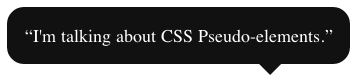

[css4-pseudo] message topic" Copyright © 2012 W3C® (MIT, ERCIM, Keio), All Rights Reserved. W3C liability, trademark and document use rules apply.
This document extracts the notion
of pseudo-elements
from the Selectors 3 specification
and proposes to extend it
to be able to create and style
an arbitrary number of pseudo-elements
before, after an element.
This document is a submission by Adobe Systems Inc. to the CSS Working Group for discussion.
Pseudo-elements create abstractions about the document tree beyond those
specified by the document language. For instance, document languages do
not offer mechanisms to access the first letter or first line of an
element's content. Pseudo-elements allow authors to refer to this
otherwise inaccessible information. Pseudo-elements may also provide
authors a way to refer to content that does not exist in the source
document (e.g., the ::before and ::after
pseudo-elements give access to generated content).
Pseudo-elements can be placed anywhere relatively to the element creating them although the state of the art currently allows only the following :
The notation for a pseudo-element is made of two colons (::)
followed by the name of the pseudo-element, possibly immediately followed
by a block of parenthesis containing comma-separated arguments.
For compatibility with existing style sheets, user agents must also
accept the previous one-colon notation for pseudo-elements introduced in
CSS levels 1 [[CSS1]] and 2 [[CSS21]]
(namely :first-line, :first-letter, :before
and :after). This compatibility is not allowed for the new
pseudo-elements introduced in this specification.
The ::first-line pseudo-element describes the contents of
the first formatted line of an element.
CSS example:
p::first-line { text-transform: uppercase }
The above rule means "change the letters of the first line of every p
element to uppercase".
The selector p::first-line does not match any real
document element. It does match a pseudo-element that conforming user
agents will insert at the beginning of every p element.
Note that the length of the first line depends on a number of factors, including the width of the page, the font size, etc. Thus, an ordinary HTML [[HTML5]] paragraph such as:
<P>This is a somewhat long HTML paragraph that will be broken into several lines. The first line will be identified by a fictional tag sequence. The other lines will be treated as ordinary lines in the paragraph.</P>
the lines of which happen to be broken as follows:
THIS IS A SOMEWHAT LONG HTML PARAGRAPH THAT will be broken into several lines. The first line will be identified by a fictional tag sequence. The other lines will be treated as ordinary lines in the paragraph.
This paragraph might be "rewritten" by user agents to include the fictional
tag sequence for ::first-line. This fictional tag
sequence helps to show how properties are inherited.
<P><P::first-line> This is a somewhat long HTML paragraph that </P::first-line> will be broken into several lines. The first line will be identified by a fictional tag sequence. The other lines will be treated as ordinary lines in the paragraph.</P>
If a pseudo-element breaks up a real element, the desired effect can
often be described by a fictional tag sequence that closes and then
re-opens the element. Thus, if we mark up the previous paragraph with a span
element:
<P><SPAN class="test"> This is a somewhat long HTML paragraph that will be broken into several lines.</SPAN> The first line will be identified by a fictional tag sequence. The other lines will be treated as ordinary lines in the paragraph.</P>
the user agent could simulate start and end tags for span
when inserting the fictional tag sequence for ::first-line.
<P><P::first-line><SPAN class="test"> This is a somewhat long HTML paragraph that will </SPAN></P::first-line><SPAN class="test"> be broken into several lines.</SPAN> The first line will be identified by a fictional tag sequence. The other lines will be treated as ordinary lines in the paragraph.</P>
In CSS, the ::first-line pseudo-element can only have an
effect when attached to a block-like container such as a block box,
inline-block, table-caption, or table-cell.
The first formatted line of an element may occur inside a block-level
descendant in the same flow (i.e., a block-level descendant that is not
out-of-flow due to floating or positioning). For example, the first line
of the DIV in <DIV><P>This
line...</P></DIV> is the first line of the P
(assuming that both P and DIV are
block-level).
The first line of a table-cell or inline-block cannot be the first
formatted line of an ancestor element. Thus, in <DIV><P
STYLE="display: inline-block">Hello<BR>Goodbye</P>
etcetera</DIV> the first formatted line of the DIV
is not the line "Hello".
Note Note that the
first line of the p in this fragment: <p><br>First...
doesn't contain any letters (assuming the default style for br).
The word "First" is not on the first formatted line.
A User-Agent should act as if the fictional start tags of the ::first-line
pseudo-elements were nested just inside the innermost enclosing
block-level element. (Since CSS1 and CSS2 were silent on this case,
authors should not rely on this behavior.) For example, the fictional tag
sequence for
<DIV> <P>First paragraph</P> <P>Second paragraph</P> </DIV>
is
<DIV> <P><DIV::first-line><P::first-line>First paragraph</P::first-line></DIV::first-line></P> <P><P::first-line>Second paragraph</P::first-line></P> </DIV>
The ::first-line pseudo-element is similar to an
inline-level element, but with certain restrictions. The following CSS
properties apply to a ::first-line pseudo-element: font
properties, color property, background properties, ‘word-spacing’,
‘letter-spacing’, ‘text-decoration’,
‘vertical-align’, ‘text-transform’,
‘line-height’. User-Agents may apply other
properties as well.
During CSS inheritance, the portion of a child element that occurs on the
first line only inherits properties applicable to the ::first-line
pseudo-element from the ::first-line pseudo-element. For all
other properties inheritence is from the non-pseudo-element parent of the
first line pseudo element. (The portion of a child element that does not
occur on the first line always inherits from the parent of that child.)
The ::first-letter pseudo-element represents the first
letter of an element, if it is not preceded by any other content (such as
images or inline tables) on its line. The ::first-letter pseudo-element
may be used for "initial caps" and "drop caps", which are common
typographical effects.
Punctuation (i.e, characters defined in Unicode in the "open" (Ps), "close" (Pe), "initial" (Pi). "final" (Pf) and "other" (Po) punctuation classes), that precedes or follows the first letter should be included. [[!UNICODE]]
The ::first-letter also applies if the first letter is in
fact a digit, e.g., the "6" in "67 million dollars is a lot of money."
Note In some cases
the ::first-letter pseudo-element should include more than
just the first non-punctuation character on a line. For example, combining
characters must be kept with their base character. Additionally, some
languages may have specific rules about how to treat certain letter
combinations. The User-Agent definition of ::first-letter
should include at least the default grapheme cluster as defined by UAX29
and may include more than that as appropriate. In Dutch, for example, if
the letter combination "ij" appears at the beginning of an element, both
letters should be considered within the ::first-letter
pseudo-element. [[UAX29]]
If the letters that would form the ::first-letter are not
in the same element, such as "‘T" in <p>'<em>T...,
the User-Agent may create a ::first-letter pseudo-element
from one of the elements, both elements, or simply not create a
pseudo-element.
Similarly, if the first letter(s) of the block are not at the start of the line (for example due to bidirectional reordering), then the User-Agent need not create the pseudo-element(s).
Example:
The following CSS and HTML example
illustrates how overlapping pseudo-elements may interact. The first
letter of each P element will be green with a font size of ’24pt'. The
rest of the first formatted line will be ‘blue’
while the rest of the paragraph will be ‘red’.
p { color: red; font-size: 12pt }
p::first-letter { color: green; font-size: 200% }
p::first-line { color: blue }
<P>Some text that ends up on two lines</P>
Assuming that a line break will occur before the word "ends", the fictional tag sequence for this fragment might be:
<P> <P::first-line> <P::first-letter> S </P::first-letter>ome text that </P::first-line> ends up on two lines </P>
Note that the ::first-letter element is inside the ::first-line
element. Properties set on ::first-line are inherited by ::first-letter,
but are overridden if the same property is set on ::first-letter.
The first letter must occur on the first
formatted line. For example, in this HTML fragment: <p><br>First...
the first line doesn't contain any letters and ::first-letter
doesn't match anything (assuming the default style for br in
HTML 4). In particular, it does not match the "F" of "First."
In CSS, the ::first-letter pseudo-element applies to
block-like containers such as block, list-item, table-cell, table-caption,
and inline-block elements. Note: A
future version of this specification may allow this pseudo-element to
apply to more display types.
The ::first-letter pseudo-element can be used with all such
elements that contain text, or that have a descendant in the same flow
that contains text. A User-Agent should act as if the fictional start tag
of the ::first-letter pseudo-element is just before the first text of the
element, even if that first text is in a descendant.
Example:
The fictional tag sequence for this HTML fragment:
<div> <p>The first text.
is:
<div> <p><div::first-letter><p::first-letter>T</...></...>he first text.
In CSS the first letter of a table-cell or inline-block cannot be the
first letter of an ancestor element. Thus, in <DIV><P
STYLE="display: inline-block">Hello<BR>Goodbye</P>
etcetera</DIV> the first letter of the DIV is
not the letter "H". In fact, the DIV doesn't have a first
letter.
If an element is a list item (‘display: list-item’),
the ::first-letter applies to the first letter in the
principal box after the marker. User-Agents may ignore ::first-letter
on list items with ‘list-style-position: inside’.
If an element has ::before or ::after content,
the ::first-letter applies to the first letter of the
element including that content.
Example:
After the rule p::before {content: "Note: "}, the
selector p::first-letter matches the "N" of "Note".
In CSS a ::first-line pseudo-element is similar to an inline-level
element if its ‘float’ property is ‘none’;
otherwise, it is similar to a floated element. The following properties
that apply to ::first-letter pseudo-elements: font
properties, ‘text-decoration’, ‘text-transform’,
‘letter-spacing’, ‘word-spacing’
(when appropriate), ‘line-height’, ‘float’,
‘vertical-align’ (only if ‘float’
is ‘none’), margin properties, padding
properties, border properties, color property, background properties.
User-Agents may apply other properties as well. To allow User-Agents to
render a typographically correct drop cap or initial cap, the User-Agent
may choose a line-height, width and height based on the shape of the
letter, unlike for normal elements.
Example:
This CSS and HTML example shows a possible rendering of an initial cap.
Note that the ‘line-height’ that is
inherited by the ::first-letter pseudo-element is 1.1, but
the User-Agent in this example has computed the height of the first
letter differently, so that it doesn't cause any unnecessary space
between the first two lines. Also note that the fictional start tag of
the first letter is inside the span, and thus the font
weight of the first letter is normal, not bold as the span:
p { line-height: 1.1 }
p::first-letter { font-size: 3em; font-weight: normal }
span { font-weight: bold }
...
<p><span>Het hemelsche</span> gerecht heeft zich ten lange lesten<br>
Erbarremt over my en mijn benaeuwde vesten<br>
En arme burgery, en op mijn volcx gebed<br>
En dagelix geschrey de bange stad ontzet.

The following CSS will make a drop cap initial letter span about two lines:
<!DOCTYPE HTML PUBLIC "-//W3C//DTD HTML 4.01//EN">
<HTML>
<HEAD>
<TITLE>Drop cap initial letter</TITLE>
<STYLE type="text/css">
P { font-size: 12pt; line-height: 1.2 }
P::first-letter { font-size: 200%; font-weight: bold; float: left }
SPAN { text-transform: uppercase }
</STYLE>
</HEAD>
<BODY>
<P><SPAN>The first</SPAN> few words of an article
in The Economist.</P>
</BODY>
</HTML>
This example might be formatted as follows:

The fictional tag sequence is:
<P> <SPAN> <P::first-letter> T </P::first-letter>he first </SPAN> few words of an article in the Economist. </P>
Note that the ::first-letter pseudo-element tags abut the
content (i.e., the initial character), while the ::first-line
pseudo-element start tag is inserted right after the start tag of the
block element.
In order to achieve traditional drop caps formatting, user agents may approximate font sizes, for example to align baselines. Also, the glyph outline may be taken into account when formatting.
The ::before and ::after pseudo-elements can
be used to describe generated content before or after an element's
content. They are explained in CSS 2.1 [[!CSS21]].
When the ::first-letter and ::first-line
pseudo-elements are applied to an element having content generated using ::before
or ::after pseudo-elements, they apply to the first letter or line of the
element including the generated content.
A CSS rule
using ::before or ::after creates a pseudo-element only if
the computed
values of the 'content'
property and the 'flow-from'
property [[CSS3-REGIONS]] are not both 'none'.
There are a11y issues with ::before and ::after pseudo-elements and generated content that were raised in the discussion of the following sections.
More than one ::before or ::after pseudo-element can be created or accessed by adding a positive integer called the ordinal in parentheses.
Using ordinals solves issues of insertion order, but does not provide a meaningful name for a particular ::before or ::after element. A named psuedo-element could provide better meaning, at the expense of ordering.
The ordinal 1 has a special meaning:
::before(1) and ::before
are strictly equivalent::after(1) and ::after
are also strictly equivalent.::before() and ::after() pseudo-elements
are ordered by increasing ordinal
from the nearest element's
contents boundaries.
For example:
Let's take the example of a div element creating two ::before pseudo-elements at ordinals 1 and 4, and three ::after pseudo-elements at ordinals 1, 5 and 8. The rules would look like this:
div::before(1) {}
div::before(4) {}
div::after(1) {}
div::after(5) {}
div::after(8) {}
The pseudo-elements
and the contents
of the element
are then ordered
in this way:
-- element's boundary --
[ ordinal 4, before ]
[ ::before, ordinal 1, before ]
-- element's contents boundary --
-- element's contents boundary --
[ ::after, ordinal 1, after ]
[ ordinal 5, after ]
[ ordinal 8, after ]
-- element's boundary --
One use of multiple ::before and ::after elements
is to mix generated content
with graphical effects.
Pseudo-elements are used
in quotes both
for adding quotation marks
in generated content
OR for drawing a
speech bubble arrow.
With multiple ::before and ::after elements
you can get both.
This effect:  can be achieved with this code:
div::before {
content: "“";
}
div::after {
content: "”";
}
div::after(2) {
content: ".";
position: absolute;
bottom: -10px;
right: 20%;
border-left: 10px solid transparent;
border-right: 10px solid transparent;
border-top: 10px solid #111;
width: 0;
height: 0;
}
div{
position: relative;
float: left;
background: #111;
padding: 1em;
border-radius: 1em;
color: white;
}
<div>I'm talking about CSS Pseudo-elements.</div>
And if you have a single quote
from multiple speakers,
more arrows can be added
by adding more ::after() pseudo-elements:
In general,
there's no longer a limitation
to two instances
for whatever
a ::before or ::after pseudo-element
can be used
(generated content,
graphic effects,
clearfix, etc.).
Another use of multiple
::before and ::after pseudo-elements
is to change the style
of pieces of generated content.
If a citation appended to a quote
should be in a different font
than the quotation mark,
two ::after() pseudo-elements
can be used.
blockquote::before {
content: "“";
}
blockquote::after {
content: "”";
}
blockquote::after(2) {
content: " - " attr(data-author);
font: normal 0.8em sans-serif;
}
<blockquote data-author="Mark Twain">The funniest things are the forbidden.</blockquote>
An issue has been raised on the previous example, questioning whether using attr(data-author) in this way is appropriate for use in an example.
A use for ordinals
is to allow muliple stylesheets
to add their own ::before and ::after pseudo-elements
and coordinate insertion positions.
If one stylesheet uses
a single ::before(10) {} rule,
then another stylesheet gets
the option to
::before(5) {}::before(15) {}Pseudo-elements can be used to generate boxes in CSS for a region chain. Allowing more than two such boxes per element could allow the main CSS Regions example to be written without empty divs for the regions in the markup.
Region chains with a fixed number of regions (usually with an auto-height region at the end of the chain) can be defined entirely in CSS using multiple pseudo-elements.
<style>
#grid {
width: 80vw;
height: 60vw;
grid-template: "aaa.d"
"....d"
"bbb.d"
"....d"
"ccc.d";
grid-rows: 52% 4% 20% 4% 20%;
grid-columns: 30% 5% 30% 5% 30%;
}
#grid::before(2) { grid-cell: a; }
#grid::before { grid-cell: b; }
#boxA { grid-cell: c; }
#grid::after { grid-cell: d; }
#body::after {
width: 80vw;
}
#grid::before {
column-count: 2;
}
article {
flow-into: article_flow;
}
#grid::before(2), #grid::before, #grid::after, #body::after {
flow-from: article_flow;
}
</style>
<article>
<h1>Introduction</h1>
<p>This is an example ...</p>
<h2>More Details</h2>
<p>This illustrates ...</p>
<p>Then, the example ...</p>
<p>Finally, this ...</p>
</article>
<div id="grid">
<div id="boxA"></div>
</div>
Several choices of syntax for declaring multiple ::before and ::after pseudo-elements have been considered.
::before[2]
::hypothetical(args)[ordinal]::before(2)
We arbitrarily chose the order here. Pseudo-elements could be
ordered differently, for example as in:
-- element's boundary -- [ ::before, ordinal 1, before ] [ ordinal 4, before ] -- element's contents boundary -- -- element's contents boundary -- [ ordinal 8, after ] [ ordinal 5, after ] [ ::after, ordinal 1, after ] -- element's boundary --
or
-- element's boundary -- [ ::before, ordinal 1, before ] [ ordinal 4, before ] -- element's contents boundary -- -- element's contents boundary -- [ ::after, ordinal 1, after ] [ ordinal 5, after ] [ ordinal 8, after ] -- element's boundary --
We expect to resolve this issue with the CSS Working Group.
The new ::nth-before(),
::nth-after(),
::nth-last-before()
and ::nth-last-after()
pseudo-elements select ::before and ::after pseudo-elements
based on indices, not ordinals.
They all take a single mandatory argument:
an+b syntax or the odd or even
keywordsExtensions to selector syntax may allow pseudo-classes after a pseudo-element.
In that case, the syntax in this section could change to something like
::before:nth(),
::after:nth(),
::before:nth-last()
and ::after:nth-last().
Is ::nth-before(n) to access all ::before pseudo-elements enough of an override mechanism?
Let's reuse the example in Example 8 above and let's show the indices:
-- element's boundary --
[ ordinal 4, before, nth index 2, last-nth index 1 ]
[ ::before, ordinal 1, before, nth index 1, last-nth index 2 ]
-- element's contents boundary --
-- element's contents boundary --
[ ::after, ordinal 1, after, nth index 1, last-nth index 3 ]
[ ordinal 5, after, nth index 2, last-nth index 2 ]
[ ordinal 8, after, nth index 3, last-nth index 1 ]
-- element's boundary --
::nth-*() syntax cannot create a new pseudo-element
and the 'content' and 'flow-from'properties do not apply to them.
They are allowed as the second parameter of ViewCSS.getComputedStyle()
if and only if the index parameter can select only one pseudo-element: for
instance 12 or 0n+5.
Pseudo-elements should be reachable by script, stylable from script, and available as event targets.
Note We may extend this section in the future to allow creation of pseudo-elements from script.
The CSSPseudoElement interface
allows pseudo-elements to be styleable from script
and makes them event targets.
The approach in this draft is to start with a bare minimum for the CSSPseudoElement interface and build up from there. Another more radical approach could take everything that's common between a pseudo-element and a node and create a new base class for both Node and CSSPseudoElement.
interface CSSPseudoElement {
readonly attribute unsigned long ordinal;
// the ordinal of a column is its index
readonly attribute DOMString type;
readonly attribute CSSStyleDeclaration style;
};
CSSPseudoElement implements EventTarget;
The ordinal
attribute represents the ordinal of the pseudo-element for the object's type.
It is a strictly positive integer. The value 1 for the before
(or after, letter and line)
types represents the ::before (or ::after,
::first-letter and ::first-line)
pseudo-elements.
The type
attribute is a string representing the type of the pseudo-element. This can be one
of the following values:
ordinal
is the index of column in the collection of columns created by the
element.The style
attribute is a CSSStyleDeclaration [[!CSSOM]] allowing
to set directly style information (inline styles) onto the pseudo-element.
Inline styles on a CSSPseudoElement have precedence over all
style rules styling that pseudo-element.
The EventTarget
interface [[!DOM-LEVEL-2-EVENTS]] must be
implemented by all instances of CSSPseudoElement in an in
implementation which supports the current specification.
The CSSPseudoElementList represents an ordered collection
of CSSPseudoElement instances.
interface CSSPseudoElementList {
readonly attribute unsigned long length;
CSSPseudoElement item(unsigned long index);
CSSPseudoElement getByOrdinalAndType(unsigned long ordinal,
DOMString type);
// replies null if no pseudo-element does not exist for
// the requested ordinal and type
};
The length
attribute represents the number of CSSPseudoElement in the
collection or zero if it is empty.
The method item()
is used to retrieve a CSSPseudoElement by
index. It takes one parameter being the requested index into the
collection. Its return value is the CSSPseudoElement
at the requested index in the collection or null if that is not a valid
index.
The method getByOrdinalAndType()
is used to retrieve a CSSPseudoElement by its
ordinal and type. It takes two parameters: first, the requested
ordinal; second a type. Its return value is the CSSPseudoElement
at the requested index in the collection or null if there is no CSSPseudoElement
in the collection for that index and type.
A new method is added to the Window interface to retrieve
pseudo-elements created by a given element for a given type:
partial interface Window {
CSSPseudoElementList getPseudoElements(Element elt,
DOMString type);
};
The method getPseudoElements()
is used to retrieve all CSSPseudoElement instances created
by the element elt for the type type.
Its return value is a CSSPseudoElementList, potentially
empty if no pseudo-element exists for the given element and the given
type.
The editors would like to thank the following individuals for their contributions, either during the conception of the specification or during its development and specification review process:
Tab Atkins, Razvan Caliman, Chris Coyier, Anders Grimsrud, Vincent Hardy and the CSS Working Group members.